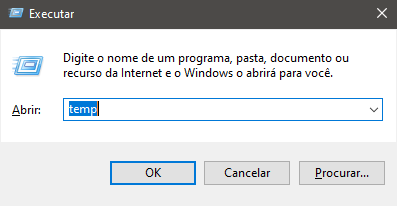
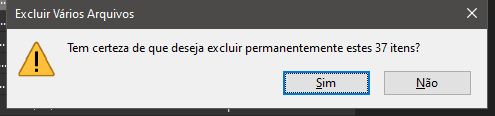
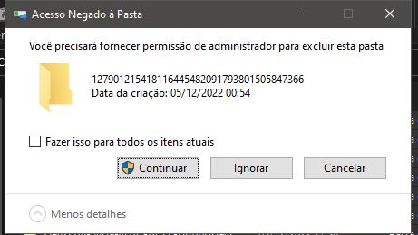
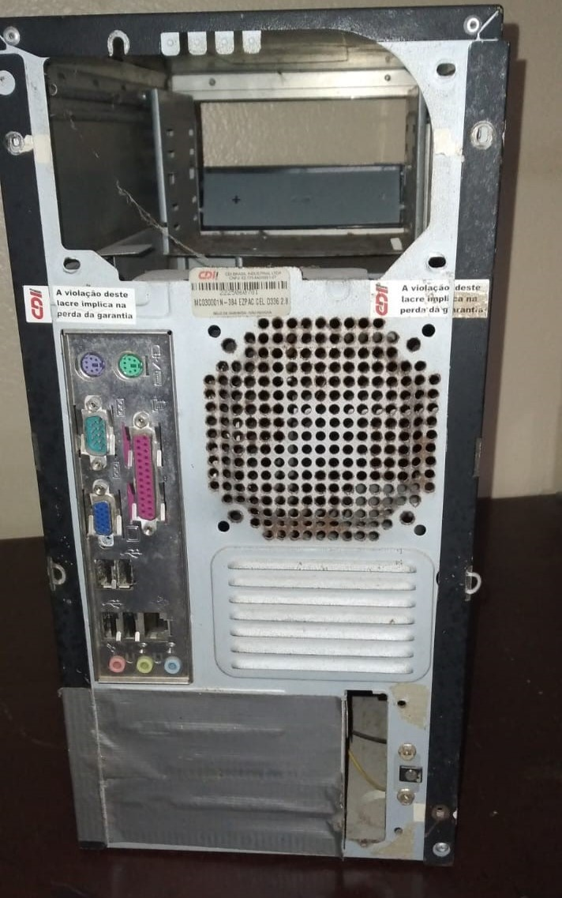
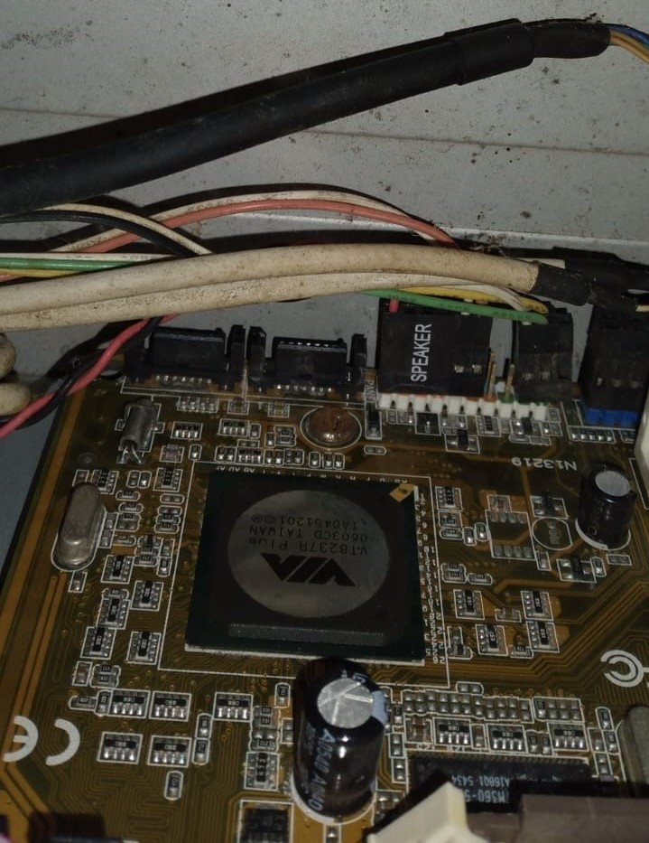

A manutenção regular de computadores é extremamente importante para empresas, mesmo que sejam pequenas. Isso se deve a diversos motivos, tais como:
A manutenção regular de computadores é essencial para empresas, independentemente do seu tamanho. Isso pode
ajudar a melhorar a produtividade, reduzir custos, aumentar a segurança e garantir a confiabilidade dos sistemas
e equipamentos. Para você que tem um pequeno comercio e não vê a necessidade de ter um setor de TI em sua
empresa, saiba que é importante pelo menos manter a limpeza de seus computadores, e para quem gosta de fazer por
própria conta este site e interessante, pois lhe mostrara alguns serviços basicos que você pode fazer.
Então pra voce que é curioso e gosta de aprender de tudo um pouco e gosta dessa área de manutenção em
computadores, está no lugar certo, pois aqui você ira ver o basico para fazer aquela limpeza no hardware do seu
computador e também aquela acelerada no software da sua máquina
Antes de executar qualquer atividade no seu computador e importante ter um planejamento, como do espaço em que
vai trabalhar, se ele é adequado para este serviço, e as ferramentas que vão ser utilizadas.
Lembre-se que
as peças de um computador são frágeis e pequenas, se você estiver em um lugar inadequado certamente as
danificar, ou se esquecer de algumas ferramenta pode ser que demore achar e perca alguma peça minuscula, mas que
é importante. Como o que vai ser ensinado aqui é apenas uma manutenção basica, certamente será bem facil ter
todas as ferramentas.
Aqui vai a lista do que será usado:
Para voce que está começando agora, lembre-se que as peças de um computador são super frágeis a energia eletrostatica, então quando manusear as peças nunca pegue nas conexões, sempre pelas bordas da peça, de forma que sua mão não tenha contato com os circuitos, usar mascara no manuseio para não acontecer de cair goticulas de saliva e também é importante manusear tudo em um lugar que não passe eletrecidade, como o metal, então o ideal á trabalhar em um balcão ou mesa de madeira ou outro material que não seja condutor e que não armazene energia.
O software do computador o que, vamos dizer assim, da vida ao seu computador, é o sistema usado na sua máquina e
os aplicativos usados. Em uma linguagem mais técnica podemos dizer que Software é um conjunto de instruções que
devem ser seguidas e executadas por algum mecanismo, seja ele um computador ou um dispositivo eletromecânico. É
um termo usado para descrever programas, aplicativos, scripts, macros e instruções embutidas diretamente no
código (firmware) para instruir uma máquina sobre o que ela deve fazer.
Por isso é importante ter um bom
funcionamento, para não acontecer de travar ou não demorar muito para ligar naquele momento de pressa que você
precisa do computador.
Esta parte de software é bem simples, onde você apenas irá limpar a memória temporária, desabilitar alguns recursos que inicializam com Windows que são desnecessários, limpeza de cookies e dados do navegador, e limpeza de disco.
A limpeza da memória temporária é uma das mais simples que tem. Existem duas memórias temporárias que você pode acessar pelo executar, que são a "temp" e "%temp%".
Para a memória temporária "temp" e "%temp%" é o mesmo passo a passo.
Uma maneira rápida de fazer isso é usar o seguinte comando: Ctrl+A; o que vai selecionar todos os arquivos e depois Shift+Delete.
Alguns tipos de arquivos não serão deletados, então você pode apenas ignorá-los.
Para você que está apenas querendo fazer aquela agilizada rápida no seu computador, aqui vai uma dica de desabilitação de recursos que não são necessários iniciar com o Windows.
Lá estarão alguns recursos que estão no seu computador, mas não têm necessidade de iniciar junto com o computador. É possível ver na parte inferior da tela o botão "Desabilitar" e caso precise que a tarefa inicie novamente com o Windows, é só fazer novamente o passo a passo e habilitar novamente.
Os cookies estão presentes a todo momento no seu navegador, seja ele Google Chrome, Mozilla Firefox ou Microsoft Edge, e eles geram um acúmulo de dados desnecessários. Aqui vamos utilizar o Google Chrome como exemplo, mas os navegadores não mudam muito suas configurações padrões de limpeza de dados.
Manter a limpeza de um computador é crucial para garantir seu bom funcionamento e prolongar sua vida útil. Para manter o computador limpo, é importante tomar algumas medidas de cuidado. Uma delas é manter o ambiente limpo e livre de poeira, evitando que ela se acumule no interior do computador. A seguir, mostraremos como você pode fazer essa limpeza passo a passo para que nada dê errado.
Dica: Para ter um pouco menos de risco de carga eletrostática, você pode usar a parte de trás do computador, irá ajudar.
IMPORTANTE! Verifique todos os cabos que estão conectados. É uma boa recomendação que você tire fotos de todos os cabos para que não esqueça a ordem e onde cada um vai.
O computador usado para amostra utiliza um tipo de cabo chamado cabo IDE (esquerda), que é mais antigo. Atualmente, é mais usual o cabo SATA (direita).
Esses cabos pequenos são extremamente importantes de decorar a ordem, pois eles implicarão em ligar o computador, cabos de áudio e USB.
Após a desconexão dos cabos voce pode tirar algumas partes para a limpeza, como o cooler, memória ram, HD e os demais.
A limpeza é feita com o pincel,cuidadosamente, passando pela placa, gabinete e conexões, para tirar o excesso de poeira e você pode usar o alcool para limpeza de conexões que podem estar com alguma oxidação, que causa o mal funcionamento.
Após a limpeza, monte novamente as coneções e os outros componentes que você tirou, caso se esqueça como
era a posição ou lugar, pode olhar as fotos que tirou antes da desmontagem (por isso e recomendado que
tire fotas antes de desmontar). Cuidado! Se você quer limpar sua maquina por estar apresentando mal
funcionamento é recomendado que você leve a uma asssitencia para um melhor estudo do problema e resolução do mesmo.
Veja mais sobre os criadores no link:
Clique aqui